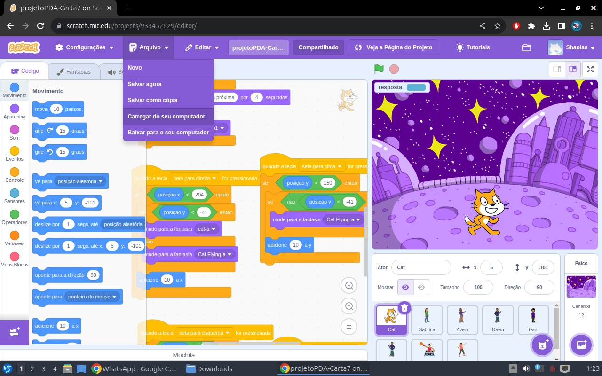

Biografia
Olá! Sou uma estudante dedicada e apaixonada por desafios, atualmente cursando Administração na Universidade Nove de Julho (Uninove) e Informática para Negócios na Faculdade de Tecnologia de Mauá (FATEC Mauá). Tenho uma formação técnica em Contabilidade pela ETEC Sapopemba e em Administração pela ETEC São Mateus, o que me proporcionou uma base sólida para minha atuação profissional.
Ao longo da minha jornada acadêmica, tenho recebido recomendações positivas dos meus orientadores educacionais, destacando a minha habilidade em compreender e aprender de maneira rápida. Além disso, destaco-me pela capacidade de me impor quando necessário, sempre mantendo uma abordagem amável na resolução de desafios.
Minha formação teórica foi instruída por um centro de referência em ensino técnico, o que me confere habilidades diversas para a execução de tarefas e uma gestão eficiente do tempo. Busco constantemente aprimorar minhas habilidades e conhecimentos, estando sempre empenhada em expandir meus horizontes e enfrentar novos desafios que possam contribuir para o meu crescimento profissional.

Além disso, tenho uma especialização em buscar novos conhecimentos em outras línguas, o que amplia a minha capacidade de atuação em ambientes multiculturais e reforça a minha adaptabilidade. Com 20 anos de idade, estou determinada a me tornar uma programadora e trabalhar com sites e programas.
Se você procura uma profissional comprometida, proativa e disposta a enfrentar desafios com determinação, estou pronta para agregar valor à sua equipe. Vamos conectar e explorar oportunidades juntos!
Habilidades
Habilidades Administrativas
- Gestão eficiente do tempo.
- Capacidade de resolver desafios de forma amável.
- Habilidade de compreender e aprender rapidamente.
- Capacidade de se impor quando necessário.
- Proatividade na resolução de problemas.
- Habilidade em lidar com ambientes multiculturais.
Habilidades Tecnológicas
- Conhecimentos em Informática para Negócios.
- Habilidades em programação para desenvolvimento de sites e programas.
- Capacidade de buscar novos conhecimentos em tecnologia.
- Adaptabilidade a novas ferramentas e tecnologias.
Atividades Realizadas
Símbolo da UNEAFRO
Trabalhar em trabalho voluntário na UNEAFRO foi uma experiência incrível. Tive a oportunidade de fazer a diferença na comunidade, conhecer pessoas inspiradoras e desenvolver habilidades valiosas. Foi gratificante poder contribuir para causas importantes e deixar um impacto positivo no mundo ao meu redor. Essa jornada enriquecedora no trabalho voluntário certamente moldou quem eu sou hoje.
Projeto do Programadores do Amanhã
Scratch - Linguagem de programação
Scratch é uma linguagem de programação criada em 2007 pelo Media Lab do MIT. Desde 2019 o Scratch 3 está disponível on-line e como uma aplicação para Windows, OS X, e Linux. O código-fonte da versão 1.x está sob a licença GPLv2. (Wikipédia)
Cada clique do mouse e cada linha escrita trazem uma sensação de conquista e realização, como se estivéssemos dando vida a algo completamente novo. É uma sensação mágica que nos envolve, nos fazendo perceber o poder da criação e o potencial que temos em nossas mãos. (Relato de um dos integrantes do grupo)
Contato
Acesse meu perfil no LinkedIn:
LinkedIn